Major Cities and Urban Centers
Visakhapatnam
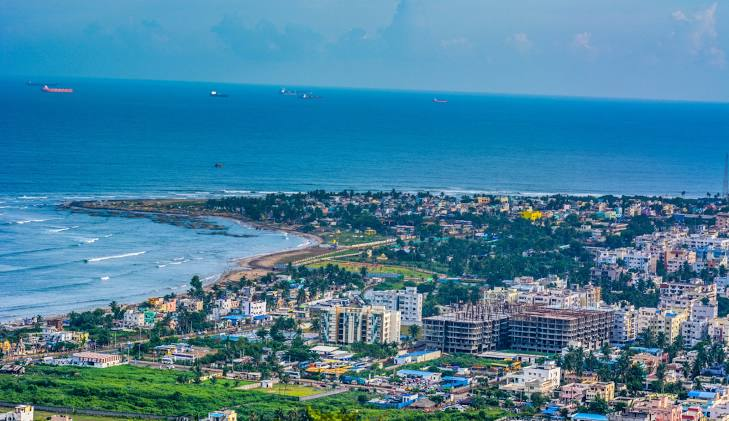
- Beaches
- Kailasagiri Park
- Borra Caves
- Simhachalam Temple
- Rushikonda Beach
- Yarada Beach
Vijayawada
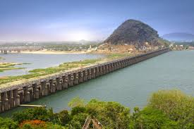
- Kanaka Durga Temple
- Prakasam Barrage
- Bhavani Island
- Undavalli Caves
- Kondapalli Fort
Amaravati
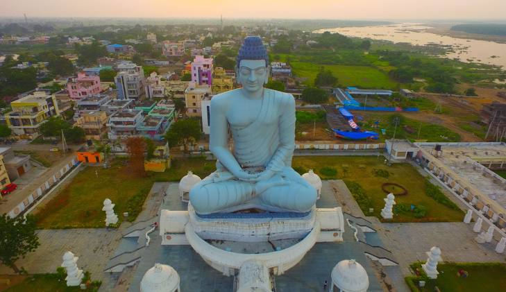
- Amaravati Stupa
- Amaralingeswara Swamy Temple
- Buddhist Heritage Sites
Tirupati
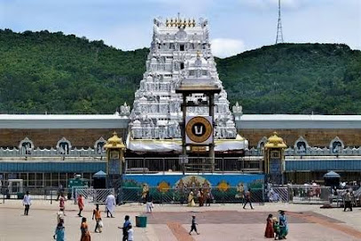
- Tirumala Venkateswara Temple
- Sri Kapileswara Swamy Temple
- Sri Govindarajaswami Temple
- Chandragiri Fort
Rajahmundry
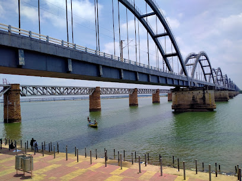
- Godavari River
- ISKCON Temple
- Dowleswaram Barrage
- Papi Hills
Hill Stations and Scenic Spots
Araku Valley
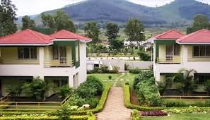
- Borra Caves
- Padmapuram Gardens
- Ananthagiri Hills
- Araku Tribal Museum
Horsley Hills
- Viewpoints
- Botanical Gardens
- Wildlife Sanctuary
- Adventure Sports
Pilgrimage Sites and Spiritual Destinations
Tirumala Venkateswara Temple

- Darshan
- Sevas
- Laddoo Prasadam
- Divya Darshan
Srisailam Mallikarjuna Temple
- Jyotirlinga Darshan
- Sakshi Ganapati Temple
- Akkamahadevi Caves
- Pathala Ganga
Historical Sites and Monuments
Charminar
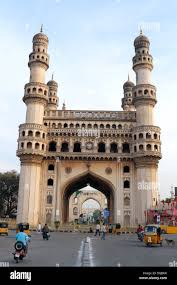
- Architectural Beauty
- Historic Significance
- Nearby Markets
Golconda Fort
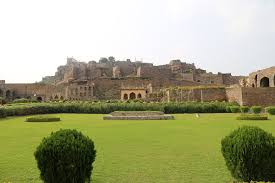
- Fort Complex
- Acoustic Marvels
- Light and Sound Show
Natural Attractions and Scenic Spots
Talakona Waterfalls
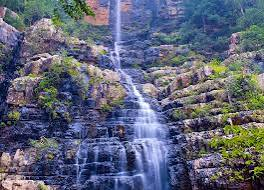
- Waterfall
- Nature Trails
- Boating
- Picnic Spot
Kailasagiri
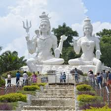
- Hilltop View
- Scenic Beauty
- Statues and Parks
- Ropeway Ride
Beaches
Rushikonda Beach
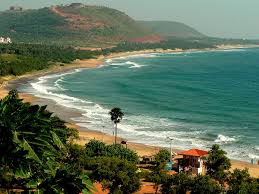
- Golden Sandy Beach
- Water Sports Activities
- Beautiful Sunrise Views
- Popular for Picnics
Ramakrishna Beach
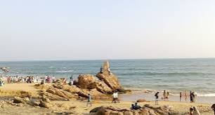
- Popular Tourist Destination
- Beachfront Promenade
- Food Stalls and Shops
- Near the Submarine Museum
Yarada Beach
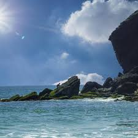
- Secluded and Peaceful
- Stunning Natural Beauty
- Clear Blue Waters
- Ideal for Relaxation
Bheemunipatnam Beach
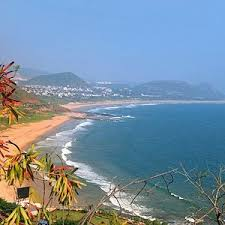
- Historical Beach Town
- Serene Environment
- Scenic Views
- Less Crowded
Cultural and Recreational Spots
Kailasagiri
- Scenic Hilltop Park
- Viewpoints
- Statues and Gardens
- Leisure Activities
Bhavani Island
- Island Resort
- Water Sports
- Boating
- Picnic Spots
Kondapalli Fort
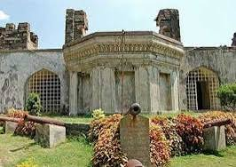
- Historical Fort
- Ancient Architecture
- Panoramic Views
- Historical Significance
Cultural and Recreational Spots
Kailasagiri
- Scenic Hilltop Park
- Viewpoints
- Statues and Gardens
- Leisure Activities
Bhavani Island
- Island Resort
- Water Sports
- Boating
- Picnic Spots
Kondapalli Fort
- Historical Fort
- Ancient Architecture
- Panoramic Views
- Historical Significance
Other Notable Attractions
Belum Caves

- Longest Caves in India
- Stalactites and Stalagmites
- Historical Significance
- Exploration Tours
Kuchipudi Village
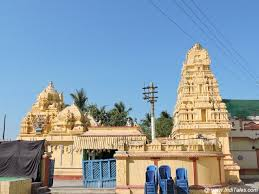
- Birthplace of Kuchipudi Dance
- Cultural Performances
- Historical Heritage
- Dance Workshops
Draksharama
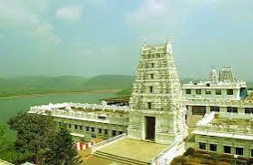
- Bhimeswara Swamy Temple
- One of the Pancharama Kshetras
- Religious Significance
- Historical Temple
Nagarjunakonda
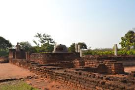
- Historical and Archaeological Site
- Ancient Buddhist Ruins
- Rich Historical Heritage
- Museum and Excavations